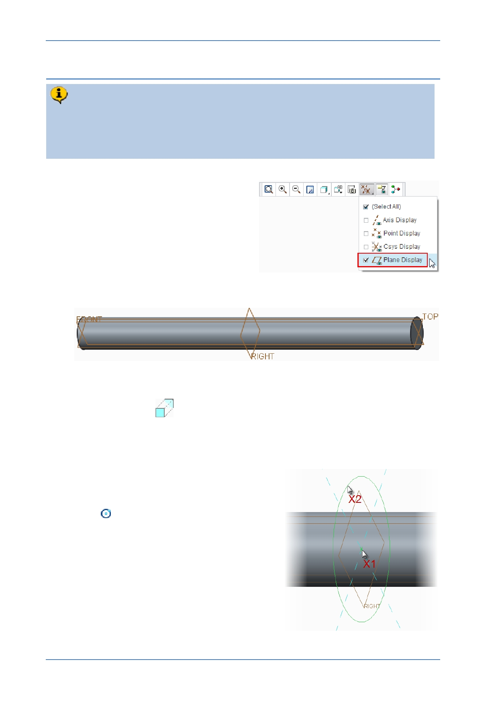

PTC Academic Program
Step 5: Extrude shoulder geometry
You will use the same technique used in Steps 2 - 4 to extrude a 12 mm
diameter circle sketched on the datum plane RIGHT . This feature will have a
depth of 70 mm, extruded on both sides of the sketch plane. This will form the
shoulder of the strut.
1. If necessary, enable the display of datum
planes.
2. Reorienting the model to its default orientation:
Press CTRL + D .
3. Starting an Extrude feature and defining the sketch plane :
Start the Extrude
tool from the Shapes group.
In the Model Tree or graphics area, click to select datum plane RIGHT as the
sketch plane.
4. With the Sketch tab now open, begin sketching
a circle:
In the Sketch tab, click Center and Point
circle
.
Move the cursor over the intersection of the
two reference lines X1 , when the cursor
snaps to the intersection, click to place the
center of the circle.
Move the cursor away from the center and
click X2 to complete the circle.
Middle-click in the graphics area to deselect
the circle tool.
© 2012 PTC
Creo Parametric 2.0 Primer
Page 51